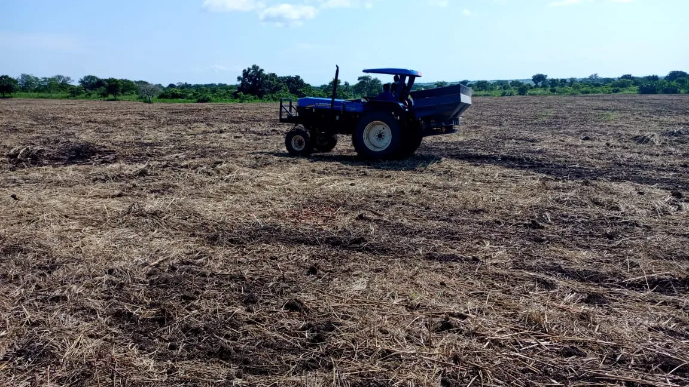
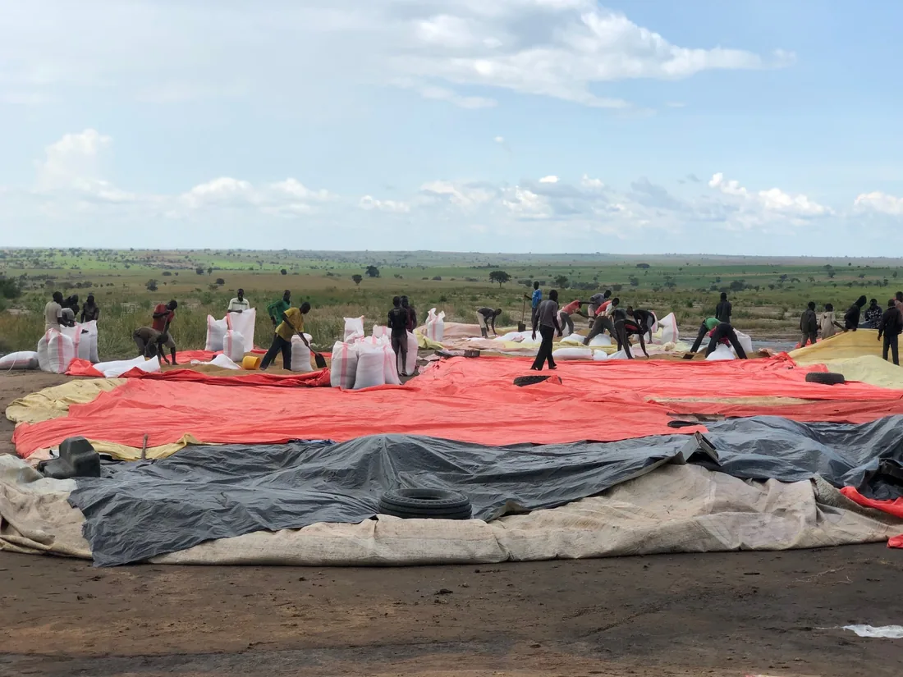
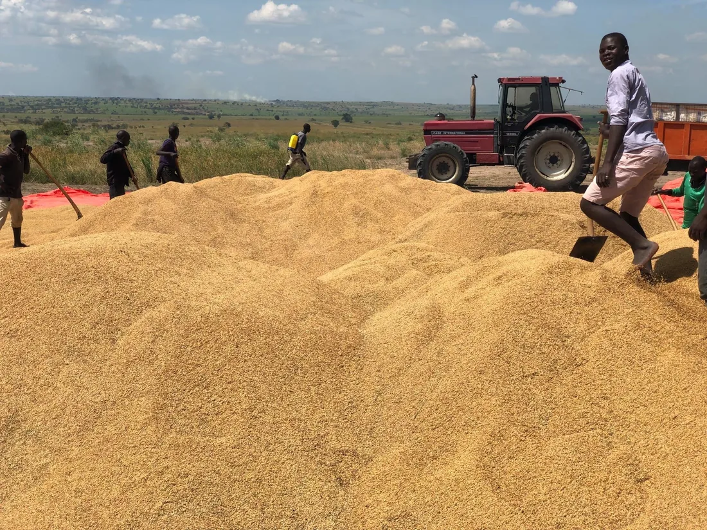

Soil-first, and rooted locally.
How Normah manages its land season over season, and how it works with the people and district around it.
Soil-first agronomy
Normah manages its land with crop rotation and cover cropping across its six crops, using compost and mulches, working with beneficial insects, and managing weeds and irrigation season to season — conservation-minded practices built into how the farm is run, not a marketing label.

Local employment
Fourteen permanent roles are planned, ten held by Ugandan nationals, plus seasonal casual labour through the year. The stated commitment is skills transfer from expatriate staff to Ugandan employees, fair wages and local hiring.

Community engagement
Farm open days at harvest and training sessions bring neighbouring farmers onto the operation, alongside work with local government on road access into the district. Planned
